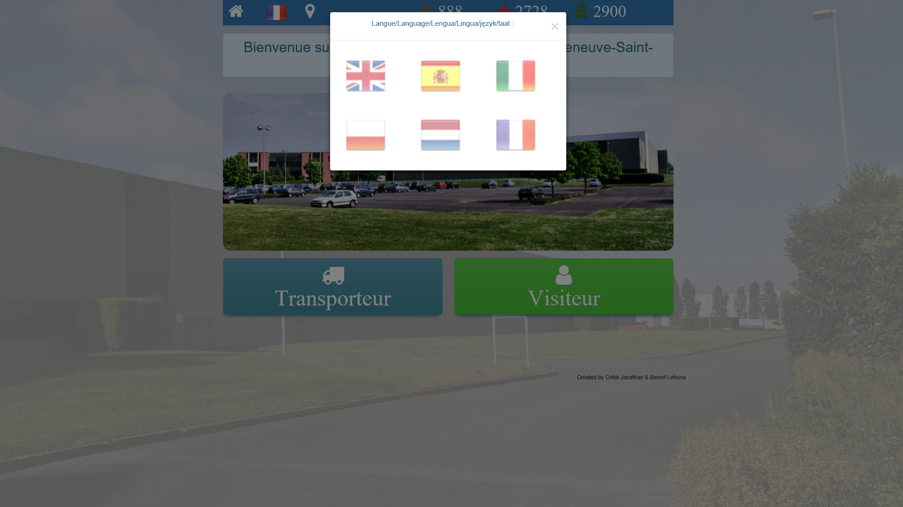
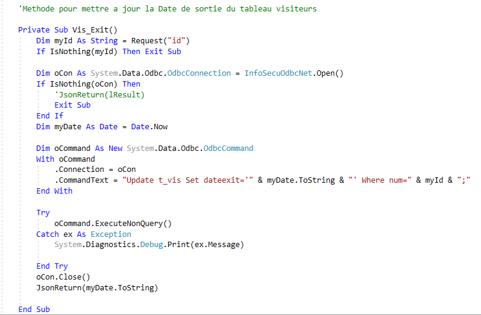
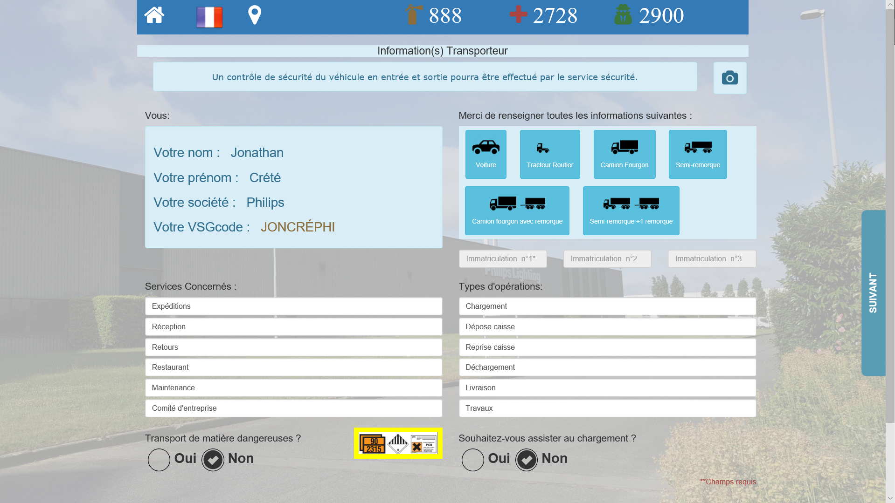
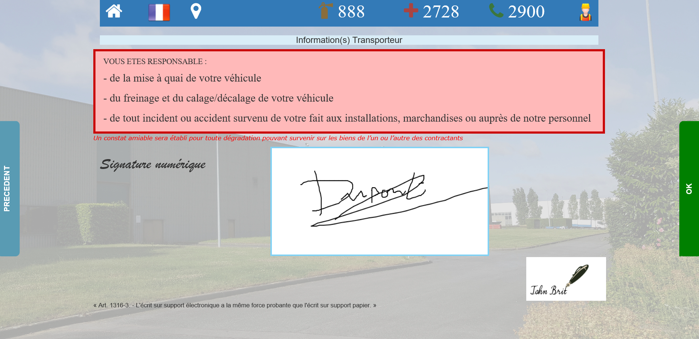

InfoSecu
Application Web intranet
|  |
Crée par Jonathan Crété / Philips Lighting (Villeneuve-St-Georges)
Présentation
Retour au PortfolioinfoSecu est une application web intranet que j'ai développée au cours de mes 2 stages à Philips Lighting (VSG*)
Elle est destinée aux chauffeurs et visiteurs entrants sur le site (Front-Office) et au personnel de sécurité (Back-Office)
Besoin de l'entreprise
Retour au PortfolioAvant le développement de l'application, les chauffeurs et visiteurs recevaient un formulaire papier (joint) donnant les consignes de sécurité sur le site, mais rien ne garantissait qu’elles étaient réellement lues.
Or, il est important que elles soient bien prises en compte pour éviter tout risque d'accident. De plus, le gardien devait garder les données d'identifications ce qui pouvait s'avérer comme une contrainte.
Contraintes
Retour au Portfolio- L'application doit être claire et simple pour les utilisateurs
- L'application doit être dynamique.
- L'arborescence du projet doit être respecté.
- Le Framework CSS Bootstrap 3 doit être utilisé
- Le langage coté serveur est VB.NET
- Le gardien bénéficie d'un espace dédiée permettant diverses opérations (Affichage entrants, impression feuilles de sorties...)
Développement
Retour au PortfolioDéveloppement basé sur le Framework .NET ainsi que sur des tables de données Access. L'application est codée en HTML/VB.NET et en javaScript pour obtenir une application mono-page (librairie jQuery) et utilise un script PowerShell afin d’assurer une mise en forme des données pour impression.


Exemple de méthode
Fichier coté serveur infosecuReq.aspx.vb
Fonctionnement
Avec l'application, le chauffeur/visiteur renseigne lui même ses informations d'identifications
Fonctionnement
....puis valide écran par écran les consignes de sécurité affichées.

Fonctionnement
Et pour finir, signe de manière consciencieuse. (L'application est présente sur des bornes tactiles)
